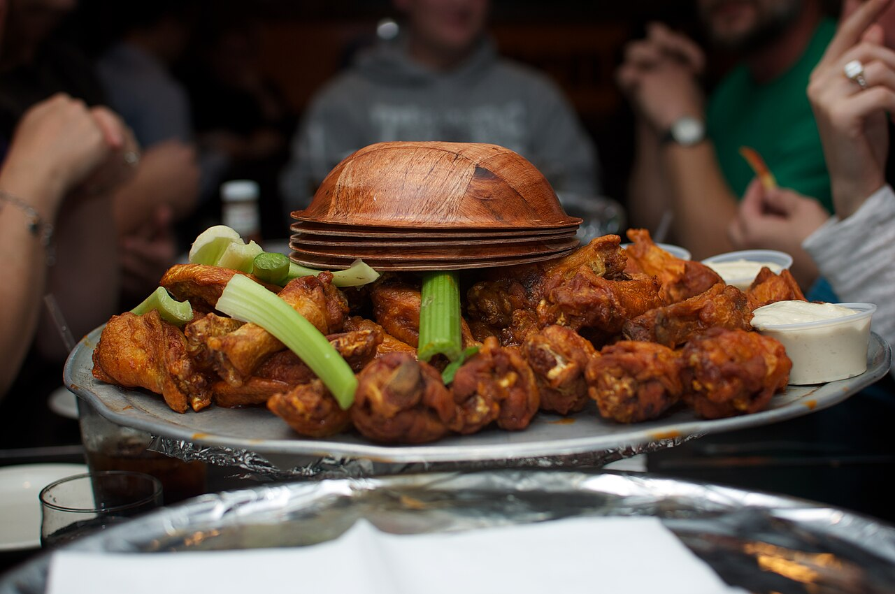
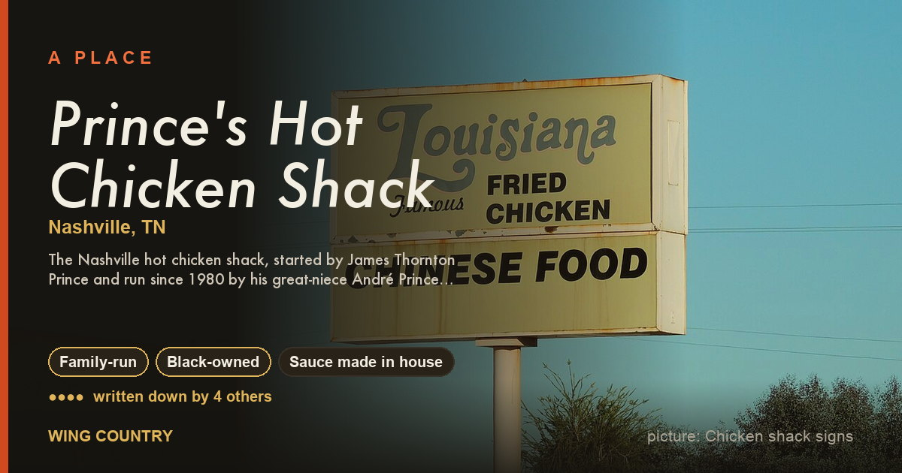
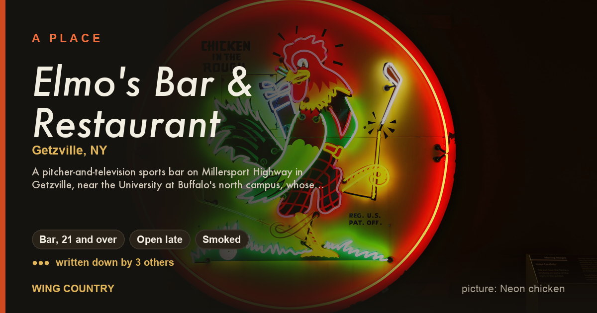
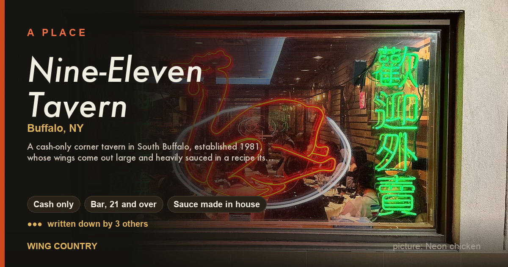
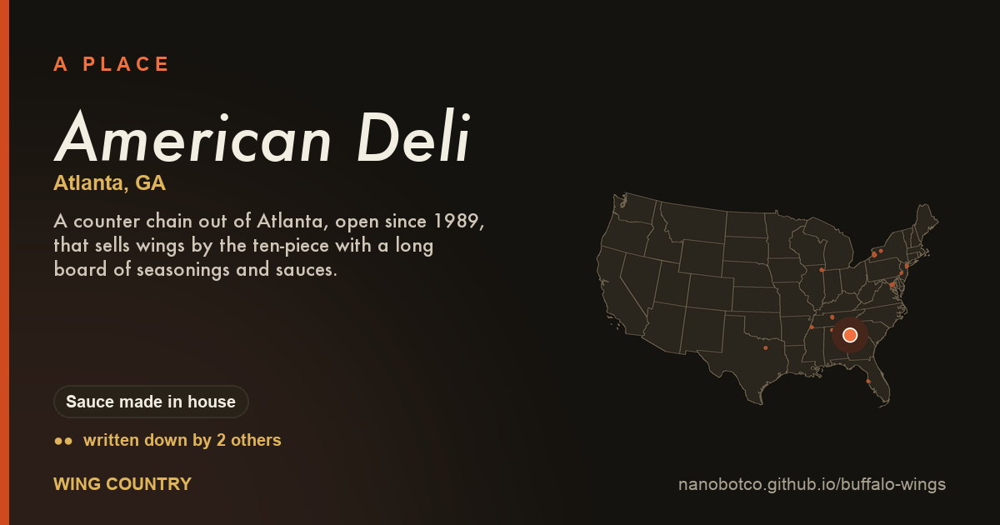
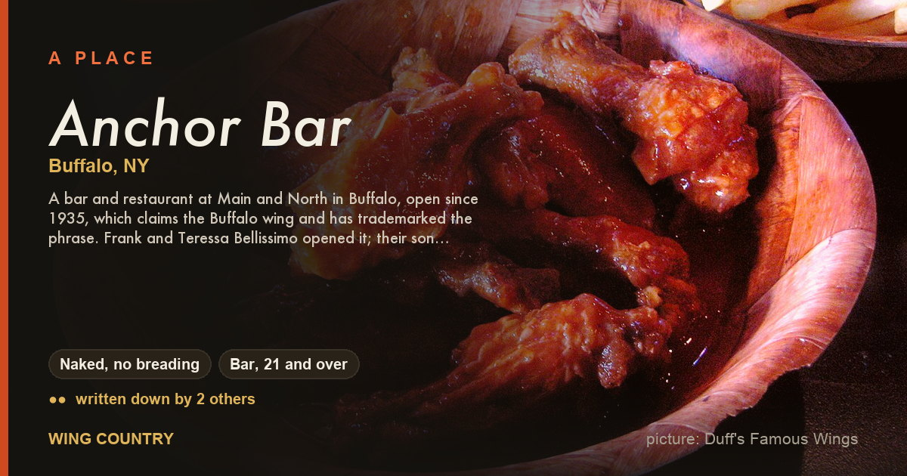
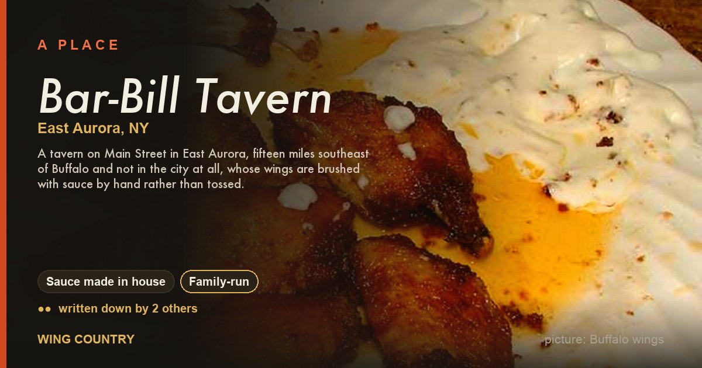

a whole country arguing about chickenWing Country
flats, drums, bleu cheese, and who fried 'em first.
Worth the gas
Joints somebody already bragged on in print — a Beard award, a Michelin line, a festival trophy, a spot on the Wing Trail. The dots count how many different people said so. Find one near you →

Prince's Hot Chicken Shack ●●●●Nashville, TN — James Beard Foundation, Southern Foodways Alliance, Food Network
👪 Family-run✊🏾 Black-owned🥣 Sauce made in house
Elmo's Bar & Restaurant ●●●Getzville, NY — Bon Appétit, Buffalo Wing Trail, The local paper or alt-weekly
🍺 Bar, 21 and over🌙 Open late💨 Smoked
Nine-Eleven Tavern ●●●Buffalo, NY — National Buffalo Wing Festival, The local paper or alt-weekly, Buffalo Wing Trail
💵 Cash only🍺 Bar, 21 and over🥣 Sauce made in house
American Deli ●●Atlanta, GA — The local paper or alt-weekly, Thrillist
🥣 Sauce made in house
Anchor Bar ●●Buffalo, NY — Other named recognition, Food Network
🔥 Naked, no breading🍺 Bar, 21 and over
Bar-Bill Tavern ●●East Aurora, NY — Buffalo Wing Trail, The local paper or alt-weekly
🥣 Sauce made in house👪 Family-runChickens on the signboard
Neon, hand-lettered boards, mascots, murals, hot sauce labels. Free to use, licence sitting right under each one. See the lot →


Ranch against blue cheese
Buffalo sends out blue cheese. America buys ranch. Blue cheese reached the wing plate on the first night of the Anchor Bar story, off the antipasto tray, and it is still the house cup along the city's wing trail.
Never have I ever
Thirty lines. Tick what you have done, see what it says about you, paste it somewhere and tag somebody.
Styles (13)
City by city: who tosses, who breads, who claims it.
- Alabama (1)
- Alabama white sauce wings
- District of Columbia (1)
- Mumbo sauce wings
- Georgia (1)
- Lemon pepper wings
- Illinois (1)
- Chicago mild sauce wings
- Maryland (1)
- Old Bay wings
- New York (2)
- Buffalo wings
- Rochester breaded wings
- Tennessee (2)
- Memphis dry-rub wings
- Nashville hot wings
- Other (4)
- Garlic parmesan wings
- Jerk wings
- Korean fried chicken wings
- Smoked barbecue wings
Sauces and dips (22)
Cayenne and butter, lemon pepper, mumbo, mild sauce, gochujang, ranch, bleu cheese.
- Cayenne and butter (1)
- Buffalo sauce
- Citrus and pepper (2)
- Lemon pepper
- Lemon pepper wet
- Dairy dips (3)
- Alabama white sauce
- Blue cheese dressing
- Ranch dressing
- Dry rub (2)
- Memphis dry rub
- Old Bay Seasoning
- Herb and garlic (1)
- Garlic parmesan sauce
- Other (6)
- Hot honey
- Jerk marinade
- Mango habanero
- Nashville hot paste
- Sweet chili sauce
- Yangnyeom sauce
- Soy and sweet (2)
- Soy garlic sauce
- Teriyaki sauce
- Sweet and red (3)
- Honey barbecue sauce
- Mild sauce
- Mumbo sauce
- Vinegar and pepper (2)
- Crystal Hot Sauce
- Frank's RedHot
On the side (18)
Celery, fries, pizza logs, beef on weck, whatever the wings ride in on.
- Bread (1)
- white bread and pickles
- Drinks (1)
- the pitcher
- On the plate (8)
- beef on weck
- boneless wings
- buffalo chicken pizza
- chicken and waffles
- chicken riggies
- the fried rice plate
- Garbage Plate
- the wing basket
- Sides (8)
- buffalo chicken dip
- celery and carrots
- french fries
- jojo potatoes
- mozzarella sticks
- mumbo fries
- pickled radish
- pizza logs
Out back (15)
Cuts, coatings, oils, fryers, smokers, the toss.
- Coatings (3)
- the breaded fry
- the dredge
- the naked fry
- Cuts (1)
- the wing cut
- Fryers (1)
- the deep fryer
- Heat (1)
- the grill
- Methods (5)
- the baking powder bake
- the double fry
- the par-cook
- sauce on the side
- the toss
- Oils (1)
- frying oil
- Preparation (1)
- the brine
- Smoke (1)
- smoke then fry
- Tools (1)
- the air fryer
Joints (33)
Bars, shacks, takeout windows, dining rooms. Open and gone.
- Alabama (1)
- Big Bob Gibson Bar-B-Q
- District of Columbia (1)
- Yum's II Carry-Out
- Florida (1)
- Hooters
- Georgia (4)
- American Deli
- Buffalo Wild Wings
- J.R. Crickets
- The Wing Cafe & Tap House
- Illinois (2)
- Harold's Chicken Shack
- Uncle Remus Saucy Fried Chicken
- Maryland (2)
- Capital City Mambo Sauce
- Horace & Dickie's Seafood
- New York (14)
- Anchor Bar
- Atomic Wings
- Bar-Bill Tavern
- Blondies Sports
- Country Sweet Chicken & Ribs
- Duff's Famous Wings
- Elmo's Bar & Restaurant
- Gabriel's Gate
- … all 14
- Pennsylvania (1)
- Chickie's & Pete's
- Tennessee (5)
- Bolton's Spicy Chicken & Fish
- Central BBQ
- Ching's Hot Wings
- Hattie B's Hot Chicken
- Prince's Hot Chicken Shack
- Texas (2)
- Bonchon
- Wingstop
People (18)
Cooks, founders, families, writers, the guy with the radio show.
- Broadcasters (2)
- Angelo Cataldi
- Al Morganti
- Eaters and competitors (2)
- Joey Chestnut
- Bill "El Wingador" Simmons
- Cooks (5)
- Teressa Bellissimo
- Bob Gibson
- André Prince Jeffries
- Thornton Prince
- John Young
- Families (1)
- Dominic Bellissimo
- Founders (5)
- Frank Bellissimo
- Argia B. Collins
- Jim Disbrow
- Harold Pierce
- Antonio Swad
- Organizers (1)
- Drew Cerza
- Writers (2)
- Adrian Miller
- Calvin Trillin
Outfits (5)
Councils, festivals, trade groups, archives.
- District of Columbia (1)
- National Chicken Council
- Georgia (1)
- U.S. Poultry & Egg Association
- Mississippi (1)
- Southern Foodways Alliance
- New York (2)
- Buffalo Wing Trail
- City of Buffalo
What happens (4)
Festivals, eating contests, Super Bowl Sunday.
- New York (2)
- National Buffalo Wing Festival
- National Chicken Wing Day
- Pennsylvania (1)
- Wing Bowl
- Other (1)
- Super Bowl Sunday
What to call 'em (18)
Flat, drum, party wing, wet, dry, naked, extra crispy.
- A (2)
- all flats
- atomic
- B (2)
- boneless
- Buffalo
- D (1)
- drumette
- E (1)
- extra crispy
- F (2)
- flapper
- flat
- H (1)
- hot honey
- M (2)
- mild sauce
- mumbo
- N (1)
- naked
- P (1)
- party wing
- W (5)
- weck
- wet and dry
- wing
- wing night
- wing tip
Signs (6)
Chickens on signboards, neon, murals, mascots, the festival poster.
- Mascots (1)
- Rooster weathervanes
- Murals (1)
- Buffalo murals
- Neon (1)
- Neon chicken
- Posters (1)
- Wing festival posters
- Prints (1)
- Hot sauce labels
- Signs (1)
- Chicken shack signs
Stories (6)
The origin fight, the ranch war, the long ones.
- Essays (5)
- Boneless is not a wing
- The flat and the drum
- The origin fight
- The price of a wing
- Ranch against blue cheese
- Where it came from (1)
- Free to use
Plain writing is cited. Tradition holds — means folks say so; Inference — means we worked it out. It is all JSON too, and the holes are at where we stop.